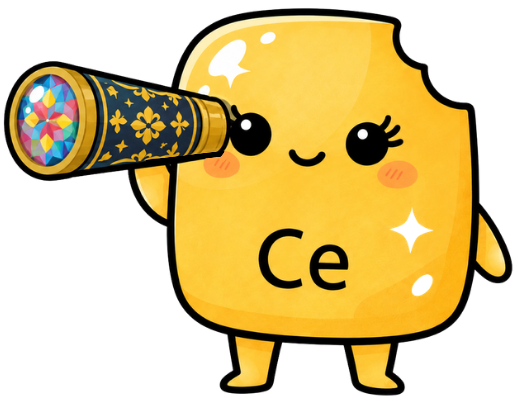

宝石をドラッグで移動／余白をなぞるとビーズがくるくる回ります。選択を外すには「✖ 選択解除」、選択中の番号をもう一度タップ、または万華鏡の余白をタップ。
💎 ① 自由な配置: 下の図鑑から宝石をタップして、最大10個まで置けます。置いた宝石には 1〜10の番号 が付き、光る輪でどこにあるか分かります！
👆 ② 選ぶ・動かす: 万華鏡の中の宝石をタップ、または 番号スロット をタップで選択（もう一度タップで解除）。ドラッグで移動、余白をなぞるとビーズがくるくる回ります。
🔄 ③ 自動回転: 「自動回転: ON」にすると模様が刻々と変化。宝石は常に鏡の内側を動くので、見失いません。
✨ ④ セリウム磨き: 酸化セリウムの輝き効果で、宝石のツヤと透明感をアップできます！